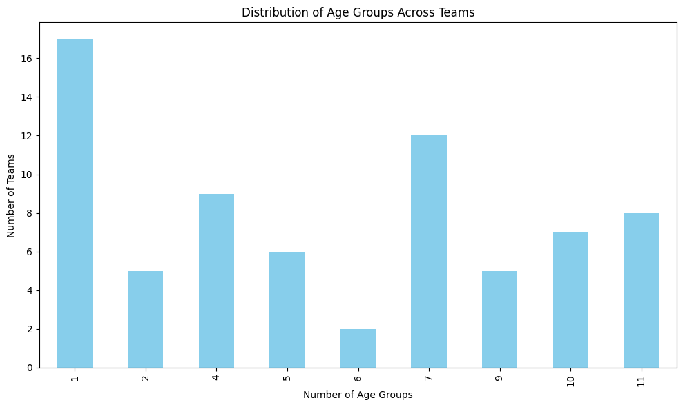

Visualizing the professional youth football progression pathway in Cornwall
Introduction
Welcome to the Footballing Demographic Report in Cornwall, a comprehensive analysis exploring youth and male football development in the region. This report visualizes the progression pathway from grassroots football to professional academies, focusing on accessibility, team distribution, and developmental opportunities available to aspiring players. It also takes a closer look into the grassroots set up and income distribution across Cornwall.
Through interactive maps, detailed statistics, and hierarchical models, we examine the current state of footballing infrastructure across Cornwall. By identifying gaps and proposing improvements, this report aims to provide actionable insights that can help ensure football opportunities are evenly distributed and accessible to players of all age groups, areas and family incomes.
The data highlights key aspects of Cornwall's football ecosystem, such as youth team concentrations, development centre locations, and pyramid hierarchies, enabling stakeholders to better understand and support the progression pathway in the region.
About the Author
Greg Eastman
Cornwall YLA Male and Boys Lead
As a youth player, I progressed through the football development pathway in Cornwall and spent six years within Plymouth Argyle's Academy. After being released at U16 I still play regularly but also transitioned from playing to coaching. I have held roles as lead coach in various Centre Of Excellence groups and Elite Hub groups through Plymouth Argyle, helping to guide and inspire the next generation of players.
Alongside my coaching career, I pursued an academic path in mathematics and computer science and am currently at the University of Plymouth. In the long term, I plan to work within statistical analysis.
Youth Progression Pathway
Youth Progression Pathway
A youth development pathway is the pathway towards the professional game through multiple stages, building up to playing for a professional academy. It is important to have a pathway in Cornwall to give the biggest opportunity for players in Cornwall to excel in their sport.
The youth development pathway in Cornwall is primarily driven by setups organized within Plymouth Argyle's Community Trust. This is because Plymouth Argyle is the only professional football club in the region with a dedicated catchment area extending into Cornwall. While Exeter City also has a small presence in upper Cornwall, Plymouth Argyle’s network dominates the development pathway, ensuring opportunities for aspiring players across the county to progress within their structured programs.
The pathway within Cornwall is shown below:
The pathway from local development centres to professional youth academies is crucial for identifying and developing young football talent. This interactive map helps us visualize where these development centres are located and how they feed into the broader football ecosystem in the region.
This map illustrates the locations representing key youth development centres within Cornwall. The circles on the map highlight areas where players are nurtured and trained through programs offered by Argyle Community Trust, which leads into the renowned Argyle Academy in Plymouth. Circles can be filtered, based on their stage in the progression pathway.
Current poor PDC locations, not covering much of Cornwall.
Current COE locations missing key areas such as Newquay.
Well spaced Elite Hub centres.
Projected Pathway Distribution
An ideal centre distribution across Cornwall
These maps below show potential locations for COE's & PDC's in the future which span far more of Cornwall, making these locations far more accessible to all youth within the County.
Potential COE placements
Proposed new PDC sites for better coverage
Pyramid Hierarchy
For the above maps, I looked at the hierarchical structure of the football development infrastructure in Cornwall. Within the pyramid, each feeder centre is connected to its respective progression along the pathway. For example, each PDC is shown to feed into its respective Centre Of Excellence. From this, we can see areas in which the development structure is distributed unevenly. On the left, in red, the current pyramid structure is shown (based off of the blue map), with an example of a better structure suggested on the right (taking locations off of the green, suggested location map).
As shown, the 1-2-2-10 structure of the current pyramid hierarchy makes for an uneven pathway with the COE stage up to the Elite Hub both containing the same number of centres. Along with this, the Brannel COE has 8 feeder centres so would likely be concentrated with too higher influx of new players, while the Launceston centre only has 3.
The suggested pathway locations above in the maps have been transferred into the above pyramid structures. As shown, this 1-2-4-13 structure is a much more evenly distributed pyramid. Each Elite Hub centre contains two feeder Centre of excellences, while each COE contains at least 3 development centres, up to a maximum of 5 feeder centres.
The pyramid hierarchy represents the structured levels in football development. In theory, the second pyramid structure would give far more players access and opportunity to progress upwards along this development pathway.
Youth Team Concentration
Another important factor to consider within Cornwall is the distribution of youth teams across all ages. This can give us great insights into areas and age groups with poor provisions.
These maps contain the number of teams within each area per 50 individuals per age range. It is a good measure of the concentration of football teams and opportunities in Cornwall. By clicking on each image, the current youth team locations for that age respectively (as of January 2025) are shown, which can be compared to another via the comparison dropdown. Note: These maps are large and may take a while to load.
U7
U8
U9
U10
U11
U12
U13
U14
U15
U16
U18
Map description will appear here when clicked.
The graphs above show the number of teams present across each age group in Cornwall and the number of boys in Cornwall per team. As expected, in the earlier youth phases the number of teams are lower before increasing sharply until the U9 age group where from the U9 to U12 age groups the number of teams are steady. At this point the team concentration begins to fall rapidly in the later U16 and U18 stages. Perhaps, the biggest concern is how few teams there are in the U18 age phase, with one team per 300 individuals. Taking into consideration that roughly 3 in 10 16-18 year old footballers play mens football rather than U18 football this decreases to one team per 210 individuals, as shown on the second graph. The green line on the first graph reprsents a reasonable target of teams across each age group, dependent on the number of players per team and ages of the players. For example, at U7 where teams play 5-aside, 50 teams would accomodate for 1 in 9 U7's playing football (assuming each team is made of roughly 8 players). On the right, the current players per team (blue) are compared to the ideal players per team (red), estimated roughly. As can be seen, from the U9 to U12 categories, this target is easily achievable. In the U11 and U12 age groups, this would only require 4 more teams to make (65 teams). The age groups with far higher concentrations of players per each team are the U7, U16 and U18 ages, at both ends of the youth football spectrum.
Low-Income Areas Impact on Football Development
For this section, I examined the impact of low-income areas on the football development infrastructure in Cornwall. I did this by focusing on whether income disparities influence access to development opportunities.
The Income Deprivation Affecting Children Index (IDACI) scores areas by the level of deprivation among children aged 0 to 15. It measures the proportion of children living in families receiving Income Support, income-based Jobseeker’s Allowance, Universal Credit (for non-working adults), Pension Credit Guarantee, or Child Tax Credit below a certain threshold. A higher score indicates greater deprivation. For example, a score of 0.24 equates to 24% of children in that area living in low income deprivation. Areas such as Camborne, Pool and Hayle have an average score of around 25%, St Blazey around 30%. The worst areas in cornwall consist of East Penzance with a staggering 52.5%, Pengegon in Camborne at 51.6% and North Redruth at 45%.
On the right, a map consisting of the number of teams per 50 individuals across the full U7-U18 age group is shown, combining the information previously discussed across all previous age groups. While the areas shown across both maps differ in boundaries and size, some results can certainly be drawn from this information.
This map highlights key low-income areas within Cornwall, which can be compared to the football team demographic to compare which areas have better access to football clubs by income. This can show how access to football development programs varies across different communities. Many low income areas, as shown, suffer from a lack of available opportunities, suggesting a potential barrier for young players from these regions who wish to progress in football.
While many of these deprived areas do consist of football teams, there is often minimal teams in comparison to the poulation of these areas. Also these teams tend to be further from the most deprived areas in a town than some of the more wealthy areas. This would suggest that in the low income areas the opportunity to play in a youth football set up is lower. For example, in Penzance, an area with one of the highest levels of deprivation, there is only one team per 100 youth individuals. Furthering this, neighbouring teams such as mousehole are far more accessible to higher income families due to the difficulties of transport to and from these more isolated areas. As shown, less deprived areas such as Wendron (8.5% of children from low incomr families) have far more opportunities, with 2.2 teams per 50 individuals. Similarly, areas such as Camborne and Redruth also have roughly one team per 100 individuals and the main team within this Camborne area, Troon, is actually located in an area with a lower 18% deprivation. Similarly, Redruth United is located in an area with 11% income deprivation. Both are over a 35 minute walk from the most deprived areas of Redruth and Camborne. These maps do not show all the information though. Even areas such as Falmouth with a positive one team per 50 individuals have all their youth set ups around two miles from the most deprived areas. This trend can be shown across many different areas as shown in this table:
Below, the percentage of deprivation for areas with the most high deprivation in regions across Cornwall are compared to the distance from the closest youth set up. This graph shows all areas with a IDACI score (explained above) of over 0.2 - 20% of families living with income deprivation.
As shown through the trendline, the most deprived areas have a larger distance from the closest local football club. This means that those from the most deprived areas have less access to football opportunities, especially as they are far less likely to be able to drive. This is backed in this national report by Sport England , whereby those from lower income families have far lower participation levels within sport. It states: "Children and young people from the least affluent families are the least likely to be active, with only 45% meeting the Chief Medical Officers’ guidelines compared to 57% of those from affluent families.", where a huge part of this could be due to the lack of access for these families.
The mean income deprivation in Cornwall is 15.8%, with 116 LSOA areas having a larger deprivation % than this. LSOA stands for Lower Layer Super Output Areas, where each LSOA area is split to contain 400-1200 households. We will look into all areas with deprivation larger than 20%.
Below, a map is shown containing a point within roughly the centre of each area with over 20% of low income deprivation for young people. As shown, these areas are often clustered together with areas such as Camborne, St Austell and Liskeard all hosting multiple neighbouring areas with high income deprivation. These circle markers vary in colour from green to red, with red being the most deprived areas. These areas are then connected by lines to the closest football team to this area. Some exceptions are made to this: areas are connected to 'developed teams' with multiple age groups rather than isolated teams which are not very accessbile. For example, Roche (South) is actually closer to St Dennis Fc than St Stephen. However, it is connected to St Stephen as St Stephen has 8 teams spread across multiple age groups while St Dennis onnly has one under 12 team. These team locations are represented by triangles, with the number of teams per 50 players for that given area corresponding to the colour of the triangle. Often, this will be the deprived areas teams per 50. Finally, these two markers are connected by lines, green to red based on the distance a player would have to travel to get from their area to the club.
Using the filters on the above map, some interesting information can be obtained, with some positives and also some negatives. These are discussed below.
Camborne & Redruth
As shown clubs tend to be external to the main towns of Camborne, Pool and Redruth. These clubs, including Dropship, Troon and Illogan are leave a huge radius, centred around Tuckingmill with little access to any youth football set up. Pengegon, the second most deprived area in the whole of Cornwall is over a 35 minute walking distance from any suitable youth set up.
St Ives
St Ives is an area, much like Liskeard, where the youth teams are not actually within St Ives and thus a journey must be made to access them, not beneficial to those suffering from income deprivation. These journeys have over an hour long walking distances, like Liskeard. Furthermore, St Ives also only consists of an under 12 team and for any other age group the nearest teams are in Hayle, an even longer journey.
Penzance
Penzance is another area whose main youth set up falls outside the main region of the area (in this case instead in Newlyn). This is on the far left side of Penzance, far from the most deprived areas. This feels extremely uneccesary with multiple astro turfs and grass pitches, such as at Humphry Davy School, being within these low income areas.
Liskeard
Liskeard is one of the areas in Cornwall where the difficulties for those living in income deprivation to access their local club is extenuated. While Liskeard Afc is located within the main town, it possesses no youth teams and instead youth players must make the journey to St Cleer to access a youth football set up. For all of these areas in Liskeard, the walking distance journey to the clubs training facility is over an hour.
St Austell and Surrounding Areas
Similar to that of Camborne & Redruth, club sides fall in external areas to the main town (the only exception to this St Austell U18). This can lead to long journeys to find a suitable opportunity for youth players in this area. Relatively more rural areas surrounding St Austell (at the top of the image) also suffer from huge travel distances to find suitable playing opportunities.
Falmouth
Falmouth is an area where the location of the main clubs, Falmouth United, Penryn and Speak Out United seem to be distanced from much of the town (especially areas such as Penmere and Falmouth Docks). However, when looking closer at the areas of income deprivation the clubs are actually centred within these areas. This is beneficial for the low income areas, alongside being on the site of schools so highly accessible as a whole.
Bodmin
While Bodmin has multiple areas with low incomes, the club has a central location meaning that all the low income areas within Bodmin can easily access the club. As shown, the external area of Lostwithiel does however have a far longer journey time to Bodmin, but has a relatively low population in comparison to that of Bodmin so the youth team location is suitable.
Saltash & Torpoint
Despite having multiple areas of deprivation, the football clubs in both Saltash and Torpoint are extremely accessible, essentially in the centre of these different areas as shown. This means there is a low travel distance for youth players, with each area a maximum of a twenty minute walking distance.
For a detailed look at how these mapping techniques and tools were used, refer to Greg Eastman’s Kaggle Notebook.
"Complete Clubs"
Defining a "complete club" to be one which has a linear pathway from U7 youth football to mens football, how many teams in Cornwall have this set up? How are these "complete clubs" spread across Cornwall? A "complete club" hosts many benefits including: Reduced Dropout Rates - A clear progression reduces the likelihood of players leaving the sport during transitional phases. Improved player development - Players transition smoothly through different age groups, minimizing disruption in their development. Club Loyalty - Players who grow up within a club are more likely to remain committed, fostering a strong club culture, and in the long term offering more to the club in terms of voluntary and non-voluntary roles. Opportunities - Clubs with more age ranges and groups offer a far greater array of opportunities for those within the local community, predominantly to play football but also to coach, referee and support the local set ups.
As shown in the graph below, there are a variety of club structures across Cornwall. There are many youth teams consisting of only one age group, for example Morwenstow Youth U9. However, there are also many "complete clubs", eight to be precise. There are seven clubs also requiring just one extra age group to become complete. Finally, there are five clubs with nine age groups, just missing two different ages to be complete.

Below is a list of all the "complete" or "nearly complete" clubs are shown. These clubs have been plotted on the map below.
All of the teams with 10 different age groups contain teams within all of the ages U7-U15. St Blazey and Helston are lacking U16 teams, while the rest lack U18 teams. For the teams with 9 different age groups, both Kelliwik United and Redruth United lack both U16 and U18 teams. Falmouth United lack U14 and U18 teams. St Day lack U7 and U8 teams, while Bodmin lack U7 and U9 teams.
Green markers represent a "complete club" with every single youth age group, orange a club with 10/11 age groups and yellow 9/11 age groups.
As can be seen, many highly populated areas consist of complete (or nearly complete) clubs. Some exceptions to this include Penzance, Torpoint, Launceston and Bude. St Austell is neighboured by two nearly complete clubs, however as mentioned previously with the travel distance these may not be suitable for deprived families.
End Notes
This site provides an overview of the male football demographic and pathway in Cornwall. The insights found within this can be taken and used to drive positive change in our football community.
For those interested in exploring the mapping and analysis methods used to visualize and understand player progression, I have shared the detailed Python code and tools utilized in this project on Kaggle. You can view the complete mapping process, including all data in table form that was used to create the visualizations, by following this link to the Kaggle Notebook.
.jpg)